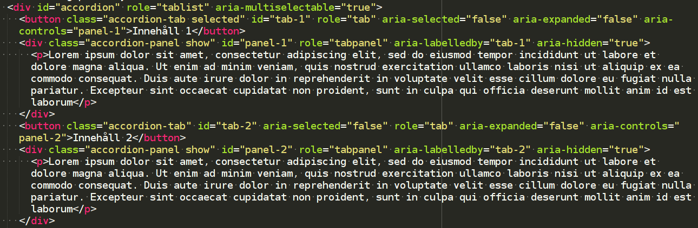

aria-hidden indikerar om ett element är synligt eller inte. Ett element anses vara dolt om det inte återges eller har aria-hidden satt till true.
Läs mer hos W3C: aria-hidden
aria-expanded indikerar om elementet, eller ett annat element som det kontrollerar, är expanderat eller inte. Till exempel kan det indikera om en del av en meny är utfälld eller inte.
Läs mer hos W3C: aria-expanded
aria-invalid indikerar om det inmatade värdet inte har angetts enligt formatet som förväntas av applikationen. Om värdet beräknas vara ogiltigt ska attributet sättas till true. Utvecklaren bör informera om felet och komma med förslag på lösning av det.
Läs mer hos W3C: aria-invalid
aria-describedby identifierar det element (ett eller flera) som beskriver objektet. Det används för att sätta en relation mellan element och text som beskriver dem. Aria-describedby liknar aria-labelledby som beskriver essensen av ett objekt, men en beskrivning ger mer information som användaren kan behöva.
Läs mer hos W3C: aria-describedby
aria-live indikerar att ett element kommer att uppdateras och vilka uppdateringar som kan förväntas från elementet, det så kallade live-området. Attributets värden uttrycks i betydelse, och värdena som finns är off (som är standardvärdet), assertive och polite. När området specificeras som polite, kommer hjälpmedel att notifiera användaren men inte avbryta en pågående handling. När området specificeras som assertive kommer hjälpmedel omedelbart notifiera användaren.
Läs mer hos W3C: aria-live
aria-controls identifierar det element (ett eller flera) vars innehåll eller synlighet kontrolleras av det aktuella elementet. Det kan till exempel vara en flik som kontrollerar visning av relaterat flik-innehåll.
Läs mer hos W3C: aria-controls
aria-haspopup notifierar användaren om att det finns ett interaktivt popup-element, som till exempel en meny, som triggas av elementet som har aria-haspopup="true".
Läs mer hos W3C: aria-haspopup
En dragspelsmeny ska ha Role="tablist" och aria-multiselectable="true". Detta möjliggör för hjälpmedel som skärmläsare att förmedla att elementet med rollen "tablist" är en dragspelsmeny eller en flervalslista, och inte en "vanlig" tabblista där endast ett val i taget kan göras.
Rubriken för varje flik i listan ska ha role="tab". Innehållet i varje flik ska ha role="tabpanel" och ska även ha ett aria-labelledby som refererar till rubriken som har role="tab".
En dragspelsmeny ska hantera utfällt och infällt tillstånd för varje flik genom att aria-expanded programmatiskt sätts till true eller false. Dragspelsmenyn ska även hantera markerad flik genom att aria-selected sätts till true eller false.
Synligheten för varje panel förmedlas genom att aria-hidden sätts till true eller false beroende på om panelen är synlig eller inte.
En tabblista/fliklista innehåller flikar och deras tillhörande innehållspaneler. Innehållspanelerna ska ha role="tabpanel" och flikarna role="tab". Varje flik-element är en länk till att visa tillhörande panel för användaren.
aria-controls för varje flik sätts till innehållspanelens id. Vilken flik som är aktiv hanteras genom att aria-selected sätts till true eller false. Containern för en uppsättning element med role="tab" ska även ha role="tablist".
En tabblista har samma funktion som en dragspelsmeny, med skillnaden att det inte är en flervalslista.
Både för- och efternamn behöver fyllas i.
Ogiltig emailadress.
Egenskapen aria-required sätts för ett formulär för att indikera för användaren att det är nödvändigt att fylla i formuläret.
State aria-invalid används för att indikera för användaren vilka fält som har inkorrekt data, och sätts programmatiskt till true eller false.
Knappen som kontrollerar dialogrutan ska ha aria-controls satt till dialogrutans id.
Generellt ska en dialogruta ha role="dialog". Om det är en enklare dialogruta med ett meddelande som varnar eller begär bekräftelse (t ex "Är du säker på att du vill avsluta?") så är riktlinjen att rollen ska sättas till alertdialog.
Dialogrutan ska vara modal och det uppnås genom att se till att, medan dialogrutan visas, ska interaktion med mus och tangentbord endast kunna göras inom dialogrutan.
Dialogrutan har egenskapen aria-label eller aria-labelledby satt till id för dialogrutans titel. Om titeln är synlig ska aria-labelledby användas, men är den inte visuellt synlig ska aria-label användas istället.
Dialogrutan har även en aria-describedby som refererar till dialogrutans meddelande (elementets id).
Dialogrutans meddelande ska även ha role="document". När en användares fokus är på ett element som har role="document" kan hjälpmedel som har ett läsläge för statiskt innehåll byta till det läsläget, där användaren kan kontrollera läsmarkören.
Ett meny-element som är visuellt synligt hela tiden ska ha role="menubar". Menyns objekt ska ha någon av dessa roller: menuitem, menuitemcheckbox eller menuitemradio beroende på objektets funktion.
Om aktivering av ett menyobjekt öppnar en undermeny, ska menyobjektet ha aria-haspopup satt till true.
Om ett meny-objekt med rollerna menuitemcheckbox eller menuitemradio är iklickad ska aria-checked sättas till true.
En container med innehåll som uppdateras när man klickar på ett menyobjekt kan ha role="region" och aria-live satt till vad som är passande för situationen; polite eller assertive.
aria-live används för att indikera att elementet kommer att uppdateras, i det här fallet elementet där resultatet av uträkningen visas.
aria-controls används för att associera ett element med området/elementet det kontrollerar. Flera områden kan associeras till ett element genom att använda mellanslag, t ex aria-controls="ID1 ID2".
html-kod
